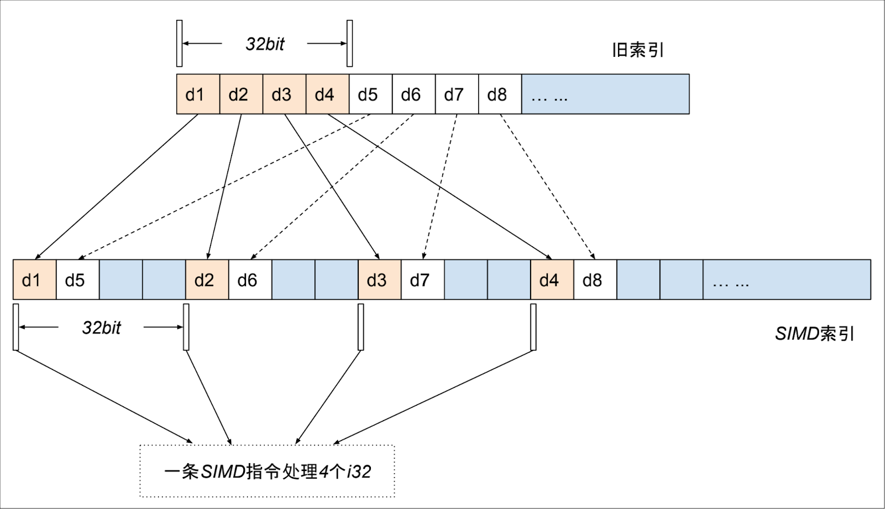
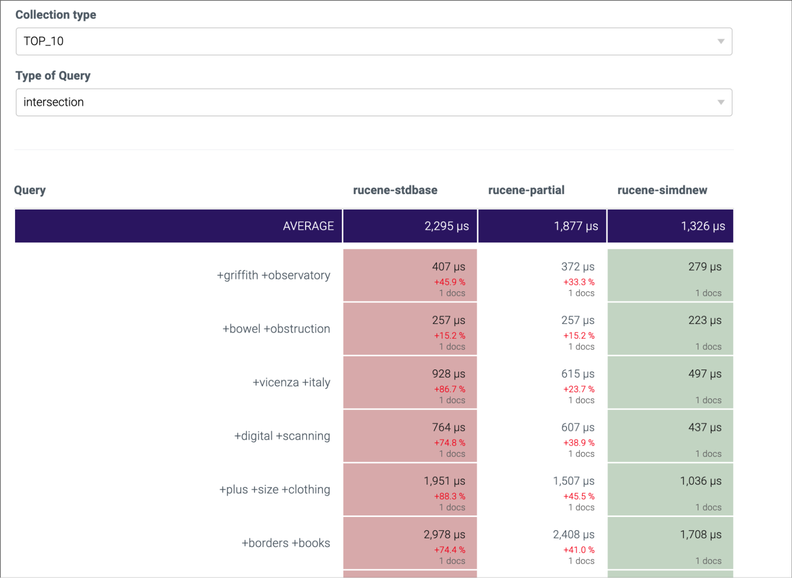
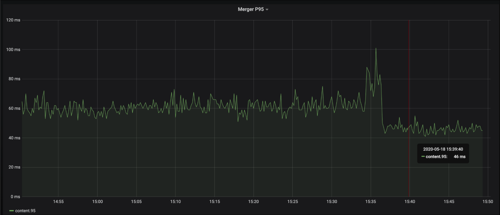

知乎 | 基于 SIMD 指令优化 Rucene
作者：知乎搜索技术团队 / 后期编辑：张汉东
Rucene，是知乎搜索技术团队基于 Lucene、使用 Rust 语言重写的一套搜索引擎核心库。对外，Rucene 负责知乎搜索和推荐两大核心业务的召回；对内，Rucene 支撑了知乎公司级的 Logging 服务。2019 年，我们已将 Rucene 开源到 Github，项目地址：https://github.com/zhihu/rucene。
SIMD，即 Single Instruction Multiple Data，单指令多数据，通俗来讲，就是借助现代 CPU 架构中提供的扩展指令集，比如 SSE、AVX 等，通过一条 CPU SIMD 指令，一次对多个数据进行并行存取和计算。
目前，在中文互联网上，很少有文章针对具体业务介绍 SIMD 优化的，具体到 Rust 语言，就更是少之又少。本文基于知乎搜索团队对 Rucene 的一些优化实践，总结下如何利用 SIMD 指令优化 Rust 程序。
利用 SIMD 优化程序，大体有三个主要途径：一是让编译器去做优化，这是一种尽力而为的行径，也依赖于编译器具体实现（笔者在调研 SIMD 过程中了解到，Java 中要使用 SIMD 需要按照一些约定来编写程序，然后可以让 JVM 去尽量做 SIMD 优化，对 Java 中使用 SIMD 感兴趣的同学可以参考下 Lucene 最新版本中关于这个话题的讨论）； 二是使用第三方库，借助别人封装好的库，通过简单调用，针对一些特定场景做 SIMD 优化，比如 simdjson、Rust 中的 faster 库等；三是直接手撕 SIMD 指令，针对具体的业务特点，有时很难直接调用封装库来使用 SIMD，这种情况只能自己编写调用 SIMD 指令的程序。接下来，本文将从这三个方面做下介绍。
Rust 编译器参数调优
我们翻阅了 Rust 官方提供的 rustc 和 cargo 的相关文档，没有发现和 SIMD 优化相关的内容，但在这个过程中，我们发现有三个编译参数，通过合理配置，可以明显提升 Rucene 的性能，其使用方式如下所示，每个参数的具体含义可以参考官方文档，这里不做详细介绍。
#使用方式一：配置 Cargo.toml
[profile.release]
lto=true
opt_level=3
codegen_units=1
#使用方式二：通过环境变量传递给 cargo
CARGO_PROFILE_RELEASE_LTO=true \
CARGO_PROFILE_RELEASE_OPT_LEVEL=3 \
CARGO_PROFILE_RELEASE_CODEGEN_UNITS=1 \
cargo build --release
使用这三个参数配置有两点需要注意：一是编译过程会变得非常慢，我们的解决方法是使用第二种方式，仅在镜像发布构建时使用；二是并不是所有程序都会有效，我们的一些简单服务使用这三个参数没有任何效果，反而增加了编译时间。因此，当你的 Rust 程序相对复杂的时候，我们建议你尝试使用这三个参数来优化程序性能。
使用 faster 库优化 Embbeding 计算
2020 年，我们尝试在引擎端做 Embbeding 召回提权，当时灰度上线后，P95 上涨明显，我们用 faster 库做向量计算优化后，P95 上涨控制在了可接受范围。大家不用关心什么是 Embbeding，需要解决的问题就是优化向量内积计算。以下第一段代码是普通的内积计算，第二段代码是使用 faster 利用 SIMD 指令的编写方式。随着向量维度的增加，SIMD 的方式性能优势会非常明显。faster 库的具体使用，大家可以参考相关文档。
// 简单的内积计算示例 fn main() { let mut score = 0.0; let dots1: Vec<f32> = vec![1.04177, 0.28162, 2.02021]; let dots2: Vec<f32> = vec![1.59189, 1.94172, 1.02021]; for i in 0..dots1.len() { score += dots1[i] * dots2[i]; } println!("score={}", score); }
use faster::{f32s, IntoSIMDRefIterator, IntoSIMDZip, SIMDZippedIterator}; // 使用 faster SIMD 库优化向量内积计算 fn main() { let dots1: Vec<f32> = vec![1.04177, 0.28162, 2.02021]; let dots2: Vec<f32> = vec![1.59189, 1.94172, 1.02021]; let score = (dots1.simd_iter(f32s(0.0)), dots2.simd_iter(f32s(0.0))) .zip() .simd_reduce(f32s(0.0), |acc, (a, b)| acc + a * b) .sum(); println!("score = {}", score); }
使用 SIMD 指令优化倒排链的解压缩性能
Rucene 的高效检索基于倒排索引，倒排索引中的倒排链按文档 ID 升序排列，128 个文档 ID 组成一个压缩的 block。搜索引擎提供在线检索服务时，大量 block 的解压操作是引擎的一个主要性能瓶颈点。接下来，我们撇开搜索引擎，将问题描述的更直白一些。
一个 block 中存 128 个整数，升序，以前 8 个数为例: 1，3，8，15，19，31，58，100，…
相邻数字相减，差值称为 delta，第一个数减去上一个 block 的最后一个数，假使这是第一个块，第一个数减去 0，得到以下 delta 序列: 1，2，5，7，4，12，27，42，…
假使 128 个 delta 之中 42 是最大值，其二进制表示 101010，共计 6 个有效位，那么128 个 delta 值全部用 6 个 bit 位存储。
原先的存储方案:一个挨着一个串行存储 1 2 5 7 4 12 27 42 … 000001 000010 000101 000111 000100 001100 011011 101010 ...
SIMD 存储方案：并行存储，前 4 个数存储在紧邻的 4 个 i32 的低 6 位，后 4 个数存储在这 4 个i32 的第 7～第 12 个 bit 位上
→ 第一个 i32 ← | –> 第二个 i32 ← | –> 第三个 i32 ← | –> 第四个 i32 ← | 000001 000100 ... 000010 001100 ... 000101 011011 ... 000111 101010 ... ...... 1 4 2 12 5 27 7 42 …
下面的示意图应该会更清晰些

4 个 i32 作为一个存储单元，第一个数存储在第一个 i32 的低六位，第二个数存储在第二个 i32 的低六位，第三个数存储在第三个 i32 的低六位，第四个数存储在第四个 i32 的低六位，第五个数存储在第一个 i32 的第二个六位，依次类推。1 至 32 的位宽都可以用 4n 个 i32 存下，1 位的位宽需要 4 个 i32，32 位的位宽需要 128 个 i32 存储。数据是对齐的，不存在 4 个 i32 中有些 i32 存满了，有些没存满的情况，非常适合并行操作。
解决完如何存储，剩下的解压操作就相对简单了。用一条 SIMD 加载指令读取 4 个 i32，用 SIMD 的按位与操作，取 4 个 i32 的低 6 位，获取前 4 个整数值，然后，4 个 i32 同时右移 6 个 bit，再做按位与操作，又获取 4 个整数值，依此类推。下图列出示例代码片段和 SIMD 优化中用到的几个主要指令。详细 SIMD 指令介绍可以查看 Rust 标准库文档或 Intel 的官方指令集文档，具体的代码实现可以查看 Rucene 的对应 MR。
MR：https://github.com/zhihu/rucene/commit/6629d2f7971bdc7ff113dbfa627b291bbfb257e9
#![allow(unused)] fn main() { //解压前4个i32的伪代码： mask = _mm_set1_epi32(0b111111) // 设置掩码 values = _mm_lddqu_si128(block_ptr) // 加载4个i32 new_values = _mm_and_si128(values, mask) // 还原4个i32 }
#![allow(unused)] fn main() { //主要用到的sse指令（共10条）： _mm_set1_epi32 // 4个i32设为同一个值 _mm_lddqu_si128 // 加载4个i32到寄存器 _mm_storeu_si128 // 存储4个i32到内存 _mm_and_si128 // 128位按位与操作 _mm_or_si128 // 128位按位或操作 _mm_slli_epi32 // 4个i32同时左移指定位数 _mm_srli_epi32 // 4个i32同时右移指定位数 _mm_sub_epi32 // 4个i32对另外4个i32做减法操作 _mm_add_epi32 // 4个i32对另外4个i32做加法操作 _mm_cvtsi128_si32 // 取4个i32中最右边的一个 }
优化效果
我们先后上线了两个优化版本：一个是部分解压 + 编译器参数调优版本，这个版本，单就编译器参数调优这一点，大概有 10% 的性能提升；第二个是 SIMD 的优化版本，这个版本在第一个优化基础上，大概又有 15% 的性能提升。总体来看，benchmark 测试，性能提升明显，引擎 Merger P95 总体下降 30%+。以下是一些性能表现截图：
版本说明：
Rucene-stdbase： Rucene 基线版本 Rucene-partial： 按需解压 + 编译器参数调优版本 Rucene-simdnew： SIMD 优化版本





总结
本文结合程序中使用 SIMD 技术的三种可能途径，概述了知乎搜索技术团队在 Rucene 优化中落地 SIMD 优化的一些实践经验。我们自身对 CPU 指令集相关技术的了解也比较有限，也是摸着石头过河，文中如有谬误之处，欢迎读者批评指正。
参考资料
- 基于 SIMD 指令的 PFOR-DELTA 解压和查找：https://zhuanlan.zhihu.com/p/63662886
- 索引压缩算法New PForDelta简介以及使用SIMD技术的优化：https://yq.aliyun.com/articles/563081
- SIMD应用：https://www.zhihu.com/market/pub/119608271/manuscript/1102576357040644096Intel
- intrinsics guide：https://software.intel.com/sites/landingpage/IntrinsicsGuide/
招聘信息
知乎搜索技术团队目前在招前端、后端、搜索引擎开发人员，欢迎感兴趣的同学踊跃投递简历，邮箱 wangjingjing@zhihu.com。